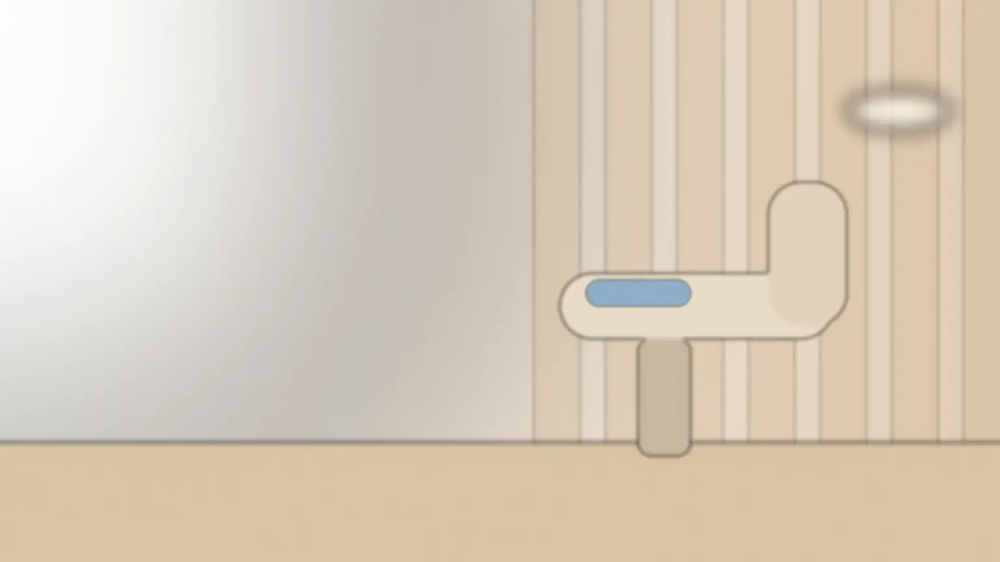
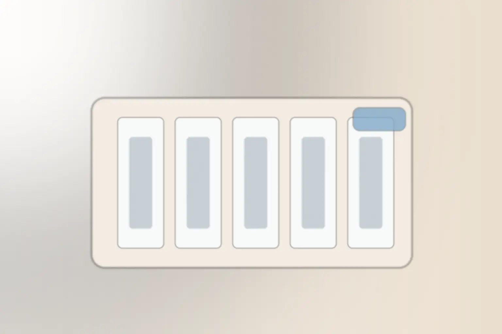
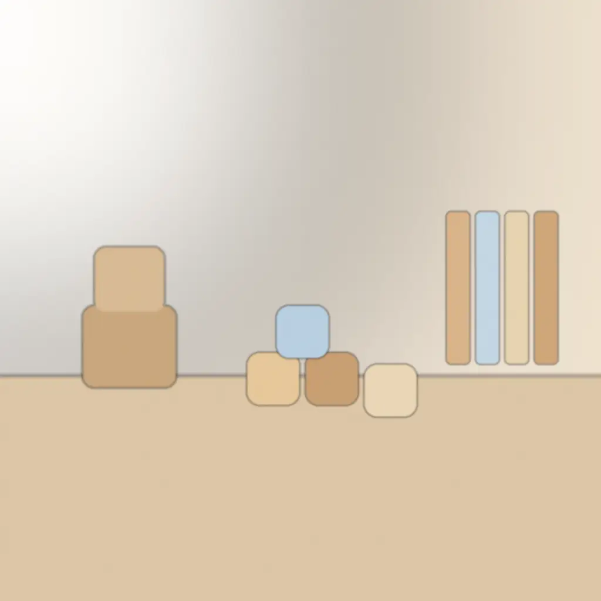

一般歯科・小児歯科・予防 ／ 商店街の外れ
削る前に、
話す歯医者です。
初めての方は、まずお話と検査から。治療をするかどうか、どれを選ぶかは、説明を聞いてから決めていただけます。
- 進め方
- お話 → 検査 → 説明 → 治療
- 初診の費用
- 保険3割で約2,500〜3,500円
相談だけの来院もできます。自費の治療は、見積書をお渡しして了承をいただいてから始めます。

模型と手鏡で、
いまの歯を一緒に見ます。
「何をされるか分からない」ことが、歯医者のこわさの大きな理由だと考えています。治療の前に、相談室で模型と手鏡を使って、いまの状態と、これからできることを説明します。
- 説明してから始めます削る・抜く前に、理由と、ほかの方法があるかをお伝えします。
- 選択肢と費用を並べます保険でできる方法と自費の方法を、同じ紙に並べてお見せします。
- 待つことも選べます急がなくてよいものは「様子を見る」も選択肢に入れます。


診療の範囲と、
初めての日の流れ。
- 一般歯科
- むし歯・歯周病・入れ歯の調整
- 小児歯科
- はじめての歯医者・フッ素・歯並びの相談
- 予防
- 3〜4か月ごとの検診とクリーニング
矯正治療・インプラントは行っていません。必要なときは、専門の医院をご紹介します。
- 受付・問診票10分用意: 保険証かマイナ保険証、お薬手帳
- お話10分気になること、こわいことを伺います
- 検査・レントゲン15分痛い処置はこの日にはしません
- 説明と次の相談15分模型と手鏡で。次に何をするか一緒に決めます
親子で、
同じ日に通えます。
- 診療室から見える場所に、キッズスペースがあります
- 親子の予約を続けて取れます。待つ間はスタッフが見守ります
- ベビーカーのまま、診療室まで入れます
- お子さまの最初の1回は「椅子に座ってみる」だけでも大丈夫です

保険の治療と、自費の治療。
ほとんどの治療は保険でできます。自費の治療をおすすめするのは、ご本人が希望したときだけです。
保険診療
国の決まりで内容と料金が決まっている治療。むし歯・歯周病・検診など。
- 初診（お話・検査・レントゲン）
- 約2,500〜3,500円
- 定期検診とクリーニング
- 約3,000円
3割負担の場合の目安。お子さまは自治体の助成の対象になることがあります。
自費診療
見た目や長持ちを優先した材料を使う治療。必ず見積書を先にお渡しします。
- セラミックの被せもの（1本）
- 88,000円
- ホワイトニング（医院で1回）
- 16,500円
治療の内容・期間・起こりうるリスクを、見積書と一緒に書面で説明します。決めるのは後日でかまいません。
金額は税込・見本用の架空価格です。保険の金額は、検査や処置の内容で変わります。
診療時間と、来院の方法。
| 時間 | 月 | 火 | 水 | 木 | 金 | 土 |
|---|---|---|---|---|---|---|
| 9:00〜12:30 | ● | ● | ● | 休 | ● | ● |
| 14:00〜18:30 | ● | ● | ● | 休 | ● | 休 |
日曜・祝日は休診。土曜は13:00まで。
- 入口はスロープ。車いす・ベビーカーのまま入れます
- 入口の横にベビーカー置き場があります
- 駐車場3台（医院の前）
相談だけの予約もできます。Webの予約は24時間、電話は診療時間内です。